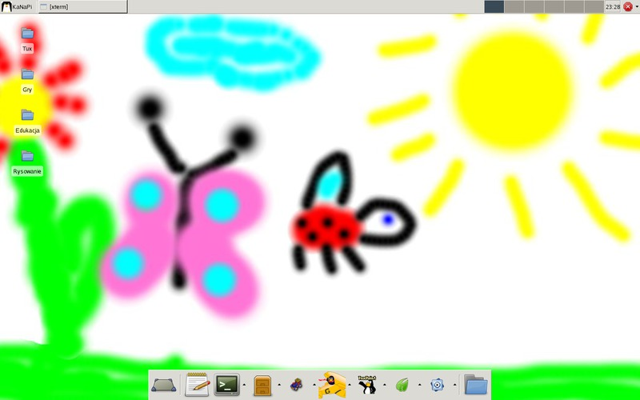

KaNaPi - Linux dla dzieci
KaNaPi - Linux dla dzieci (małych i dużych)
Zimowisko Linuksowe TLUG 2013
10.03.2012 Puck
Jacek Danecki

Agenda
- Czy myślałeś kiedyś dlaczego są setki dystrybucji Linuksa?
- Czym jest dystrybucja Linuksa?
- Różnice pomiędzy dystrybucjami
- Krótki przegląd dystrybucji
- Czy wszystkie pingwiny są przyjazne dzieciom?
- Jak zbudować własną dystrybucję na przykładzie KaNaPi?
- Założenia
- Architektura
- Proces budowania
- Proces uruchamiania
- KaNaPi - statystyka
- KaNaPi jako dystrybucja